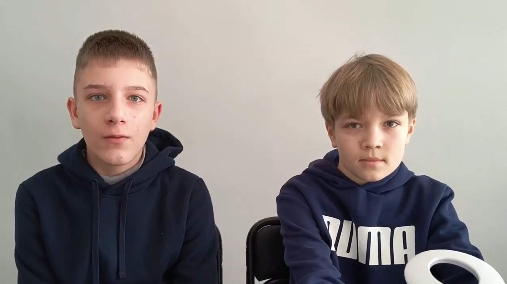
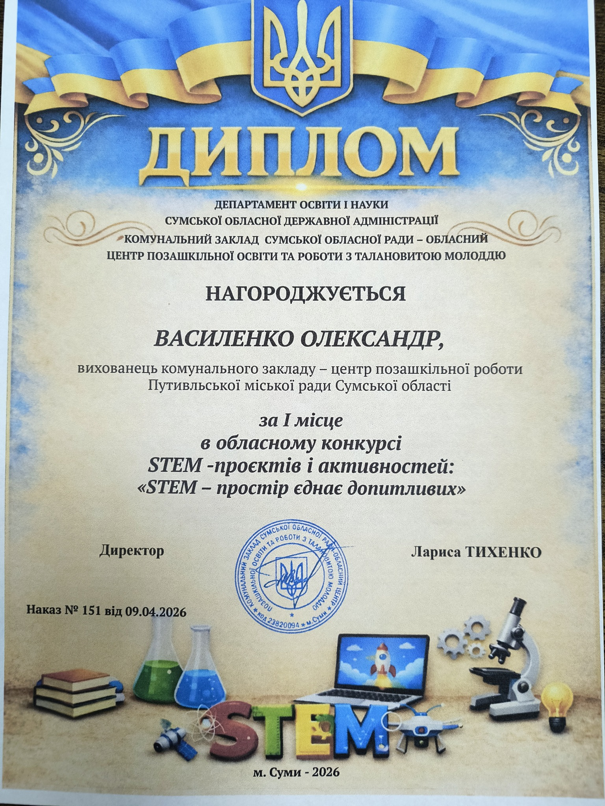
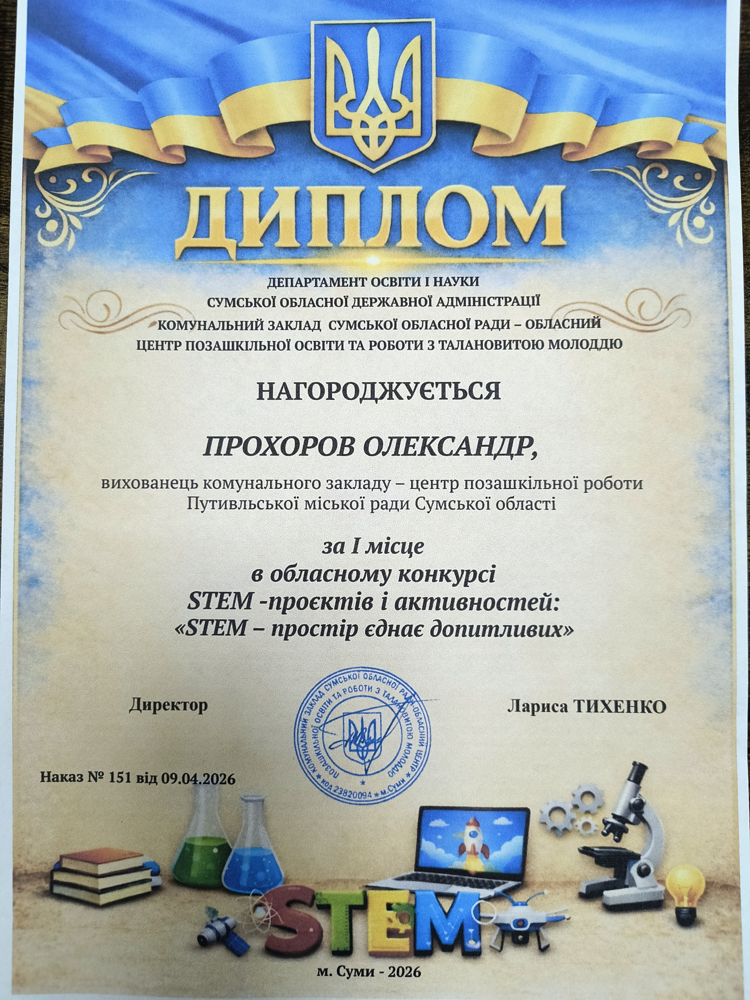

Космічний сміттяр на зв'язку: як наші юні програмісти створюють гру, що рятує планету

Вихованці гуртка «Web-програмування» вибороли І місце в обласному конкурсі STEAM-проєктів і активностей «STEAM-простір єднає допитливих»!
Переможцями стали Василенко Олександр та Прохоров Олександр, які представили власний проєкт — навчальну гру «Космічний сміттяр».


Як це працює?
Гравець керує космічним кораблем, збирає сміття на орбіті та сортує його у відповідні контейнери. Здавалося б, просто? Але за цим стоїть глибока ідея: через гейміфікацію юні розробники показали, як сучасні технології можуть привертати увагу до екологічних проблем.
🌍 Чому це важливо?
Проєкт поєднав одразу три потужні складові: творчість, програмування та екологічну свідомість. Хлопці довели, що навчання може бути захопливим, корисним і надихаючим. А ще — що навіть у космосі варто наводити лад.
Ідея, код, турбота про планету — ось формула справжнього STEAM-проєкту. Дякуємо, що надихаєте своїм прикладом. Нехай «Космічний сміттяр» ще нагадає про себе!